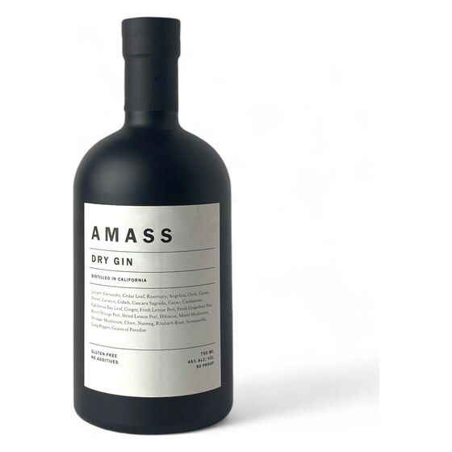
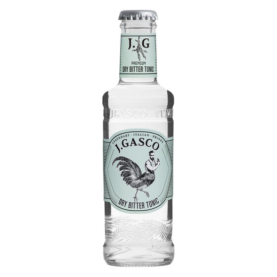
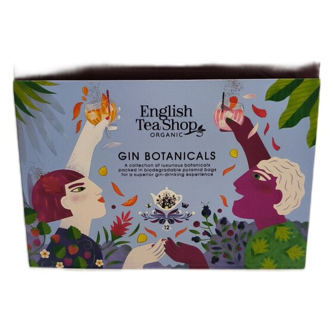
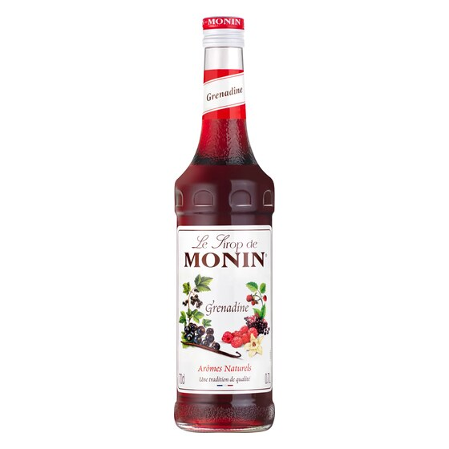
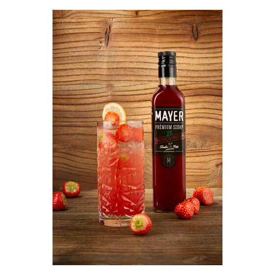

AMASS Dry Gin
Mi ez
Egy prémium, Los Angeles-ben lepárolt gin, amelybe 29-féle különleges
fűszernövényt és botanikai alapanyagot rejtettek.
Így használjátok
Tökéletes egy elegáns, otthoni koccintáshoz sok jéggel és a kosárban lévő tonikokkal.

J. Gasco Tonikok
Tonica Mediterranea & Dry Bitter Tonic
Mi ez
Két szuper olasz tonik, mesterséges édesítőszerek nélkül. A Dry Bitter egy tiszta,
hagyományosan kesernyés vonalat képvisel, míg a Mediterranea fűszerekkel és
citrusokkal egy lágyabb, illatosabb ízvilágot nyújt.
Így használjátok
Keverjétek a ginhez! A Dry Bitter a tökéletes klasszikus G&T élményhez,
a Mediterranea pedig egy virágosabb, könnyedebb italhoz szuper választás.

English Tea Shop Organic Gin Botanicals
Mi ez
Organikus fűszerkeverék, amit kifejezetten gin-tonik ízesítéséhez találtak ki,
praktikus filteres kiszerelésben.
Így használjátok
Dobjatok egy filtert a kész gin-tonikotokba, hagyjátok ázni pár percig,
és élvezzétek az extra ízélményt.

Monin Grenadine szirup
Gránátalma
Mi ez
A koktélkészítés egyik alapköve. Ez egy klasszikus gránátalmaszirup,
amely szép színt és édeskés-gyümölcsös ízt ad az italoknak.
Így használjátok
Keverjetek belőle alkoholos vagy mentes koktélokat, de egy egyszerű
limonádét is simán feldob.

Mayer Prémium Bazsalikomos Eperszörp
Mi ez
Kézműves hazai szörp, amiben az édes, klasszikus eper ízét a bazsalikom
teszi izgalmassá és frissítővé.
Így használjátok
Hígítsátok szódával egy meleg nyári délutánon, de koktélokba vagy
egy extrább limonádéba is szuper.